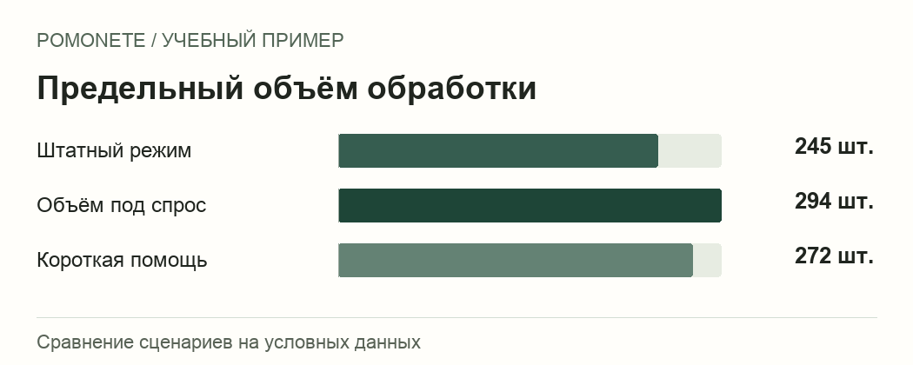

Прогноз с ограничением по мощности упаковки на Яндекс Маркете
Как селлер сравнивает доступное число отправлений с прогнозом заказов по рабочим дням.
Селлеру Яндекс Маркета показали прогноз заказов светильников, который выше обычного. Сроки поставки позволяют купить нужное число штук, но обработка занимает время. Сначала найдём объём, который склад успеет выпустить за сопоставимое окно, затем увяжем его с закупкой.
Как замерить выпуск
Просмотрите смены с рабочим ресурсом и похожим ассортиментом. Помощь, простои и длинную подготовку разделите. Если один крупный товар требует гораздо больше времени, сгруппируйте партии по сложности, чтобы оценить разное время обработки для одинакового числа единиц.
Чтобы пересобрать расчёт «Предельный объём обработки» для своего магазина, перенесите в него исходные числа. В формуле A обозначает «выпуск за смену, шт.», B обозначает «число рабочих смен», C обозначает «отдельная обработка, шт.». Переменную часть оценивают через объём, а разовую добавляют отдельно. Проверьте, что разовая величина ещё не включена в ставку. Запишите рядом период и охват каждого среза. Для оценочных строк оставьте пояснения рядом с исходными значениями. При чтении сводки будет видно, какие из них пока подтверждены.
Предельный объём обработки = A × B + C
| Условие | Выпуск за смену, шт. | Число рабочих смен | Отдельная обработка, шт. | Предельный объём обработки |
|---|---|---|---|---|
| Штатный режим | 49 | 5 | 0 | 245 шт. |
| Объём под спрос | 49 | 6 | 0 | 294 шт. |
| Короткая помощь | 49 | 5 | 27 | 272 шт. |

В сценарии «Штатный режим» в формулу подставляем выпуск за смену, шт. = 49, число рабочих смен = 5, отдельная обработка, шт. = 0. Получается 245 шт.. Пять смен проходят с текущим составом людей и привычной структурой заказов.
В сценарии «Объём под спрос» в формулу подставляем выпуск за смену, шт. = 49, число рабочих смен = 6, отдельная обработка, шт. = 0. Получается 294 шт.. Появляется ещё одна смена. Понадобится подтвердить доступность места передачи.
В сценарии «Короткая помощь» в формулу подставляем выпуск за смену, шт. = 49, число рабочих смен = 5, отдельная обработка, шт. = 27. Получается 272 шт.. Добавлен ограниченный внешний ресурс в дни, когда загрузка максимальна.
Если «Штатный режим» взять за исходную точку, «Объём под спрос» меняет показатель «предельный объём обработки» на 49 шт., а «Короткая помощь» на 27 шт.. Между двумя последними строками разница составляет -22 шт. при вычитании второй из третьей. Смотрите, какой именно вход изменился между строками. Если менялись объём и условия одновременно, итог сравнения относится ко всему сочетанию.
От меньшего результата до большего в таблице 49 шт.. При переходе из «Объём под спрос» со значением 294 шт. в «Короткая помощь» со значением 272 шт. условия заданы явно. Этот интервал описывает три построенных случая, а для вероятности исходов нужна история. В рабочей записке полезно назвать минимальное значение, при котором сохранится ваше решение. Если такой порог попадает внутрь интервала, подтвердите спорный параметр до того, как менять процесс.
Где проходит граница допустимой загрузки
Выпуск за неделю может формально покрывать спрос. Если значительная часть заказов появится к одному сроку, на накоплении возникают опоздания. Проверьте сроки по дням и время, когда запас доступен для начала сборки.
Для исходной выборки пригодятся история продаж, журнал остатков и даты фактических приходов. Зафиксируйте строки и границы периода, по которым собирался показатель «предельный объём обработки». Копию выгрузки держите рядом с рабочим расчётом. По ней коллега сможет проверить, что строку отнесли к нужному сценарию, а единица измерения сохранилась при переносе.
В историю поставок запишите обещанную и фактическую дату, момент доступности товара и интервал, в котором возник недозаказ. Разовые всплески спроса и дни без товара полезно отмечать отдельно. Когда данных мало, прогноз на ближайший горизонт лучше держать несколькими уровнями и привязывать каждый к своему действию. При высокой неопределённости небольшая партия с возможностью докупки даёт другую экономику, чем дешёвая крупная партия с долгим ожиданием.
Что сильнее всего меняет результат
Здесь проверим устойчивость числа 294 шт., полученного для «Объём под спрос». Для примера проверим «выпуск за смену, шт.», «число рабочих смен», «отдельная обработка, шт.». Меняем по одному параметру с шагом около 10% от его значения. Для небольших исходных чисел разница округляется до доступной целой единицы. Сдвиги ниже относятся к исходному сценарию, поэтому читатель может сопоставить их в одних единицах.
- «Выпуск за смену, шт.» меняется с 49 на 54. При прежних остальных входах получается 324 шт., сдвиг составляет 30 шт..
- «Число рабочих смен» меняется с 6 на 7. При прежних остальных входах получается 343 шт., сдвиг составляет 49 шт..
- «Отдельная обработка, шт.» меняется с 0 на 1. При прежних остальных входах получается 295 шт., сдвиг составляет 1 шт..
Наибольшее отклонение в примере связано с параметром «число рабочих смен» и составляет 49 шт.. Сохраните в расчёте, почему выбран именно этот сдвиг. После следующей выгрузки вместо учебных шагов попробуйте подставить разницу между наблюдавшимися периодами. Так проверите, насколько устойчива цифра при фактических колебаниях вашего магазина.
Если используется отгрузка несколькими моделями работы, разнесите доступный выпуск и очереди по ним. Один общий остаток не сдаётся одновременно на две операции. Проверка ограничения на тесном участке обычно меняет набор мер до покупки дополнительной партии.
Как ограничить план на тест
Согласуйте высший объём обещаний, который можно обслужить по дням. Затем решите, как привлечение поддержки скажется на выпуске, качестве и дополнительных расходах. Сохраните прогноз спроса отдельно от лимита, чтобы уточнить реальные потери позже.
На очередном пересмотре отметьте, какие сроки реализовались и какой был спрос в дни с доступным запасом. Оценку качества считают на событии, которое наступило после составления прогноза. Так проще отделить неточность метода от изменившейся доступности поставщика. Сохраняйте предположения на момент закупки, чтобы после перемен на рынке можно было объяснить размер партии по датам и объёмам.
Оставьте в рабочей таблице причину выбора. Когда селлеры Яндекс Маркета возвращаются к расчёту «предельный объём обработки», им пригодятся полученное значение, ответственный и дата пересмотра. Если в решении использовался сценарий «Объём под спрос», перенесите вместе с ним допущения. При обновлении источников сначала проверьте одну исходную строку и только потом пересчитывайте сводку.